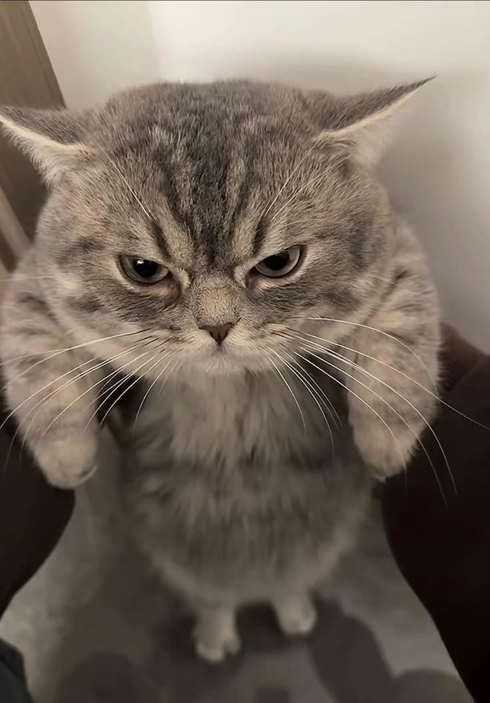
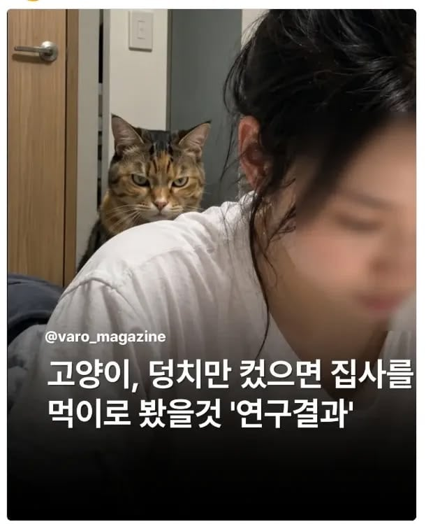
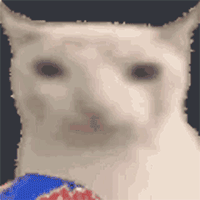
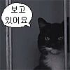
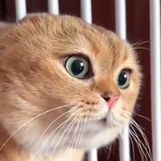
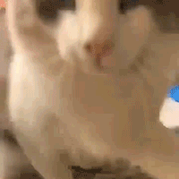

그렇다.


그렇다.
덩치큰 고양이가 호랑이지


인간도 덩치가 평체 1톤이였으면 호랑이를 고양이 다루듯했겠지
고릴라처럼 악력 쎘으면 후두려 팼지
그래서 주인 죽으면 바로 먹는건가
좆간련 쫄깃쫄깃한 ww

알아

좆냥이쉨
개는 안그런가봐? 갓댕이
주인의 시체는 개가 더 잘 먹는다더군요
물론 안먹고 같이 고독사한 주인이랑 굶어죽는 개도 있다고 하고
먹어서라도 살아라 갓댕아ㅠ
반대로 알고있는데
개는 망설이고 고양이는 아니고
https://brunch.co.kr/@famtimes/465
...고양이도 있지만 대부분 개가 차지했다
유명한거잇자나 조선시대 왕 누구엿냐 고양이키웟다가 왕이죽으니까계속굶다가 굶어죽은거
큰냥이들 사람 찢고 씹고 하잖어...
인간도 15미터였으면 호랑이도 애완동물로 삼았어
15미터였으면 말대신 코끼리나 기린 타고 댕겻을듯 ㄷㄷ
“아하하하 보세요 울 호랭이가 제 손가락을 물고있어요! 성인 인간 기준으론 간지럽지만, 아가들이나 꼬맹이들은 아직 피부가 여려서 긁힐 수도 있으니 입질은 어렸을 때부터 잘 교육 해 두는 편이 좋아요“
ㄹㅇ 호랑이 진심 사커킥 까면 내장터질듯

와첫째짤 넘모커엽당

새처럼 "그냥" 죽였겠지
커다란 개 - 늑대
커다란 고양이 - 호랑이
빅껄룩은 사람을 먹어
https://www.capradio.org/news/npr/story?storyid=455725899
저 짤 히스토리인 즉슨 2015년에 언론이 2014년에 고양이 사고 구조가 사자와 비슷하다는 연구가 있었다고 소개하며 그럼 고양이가 크면 사람을 죽이겠네 라는 식으로 보도를 함
근데 그게 화제가 된 다음에 그 연구자가 직접 그건 사고 요인이 닮았다는거고 주요 요인이고 개별 특성하고는 상관없고 어쩌고 해서 부정했다고 함
물론 내생각에도 고양이가 사자만큼 컸으면 사람 갖고놀다가 죽일 것 같음
쥐랑 새도 그냥 심심해서 죽이는 내츄럴 본 도살자들이 사람보다 커지면 당연히 사람도 그렇게 가지고 놀다가 죽이겠지 개도 여러마리 모여서 야생화 되면 사람 물어죽이고 다니는데 당연한 이야기긴 함
캣 : 내가 덩치만 컸어도
근데 덩치커진 고양이라고 사람죽일수있다는 보장이 전혀없음. 고양이과동물 치타 생각해보면 고양이과라고 해서 다 범류 같을리도없는데 체급대비 근섬유밀도가 인간보다 뛰어난다는법도 없고 얘도 유연성에만 몰빵하다보니
그냥 덩치만 큰 단또될지도?
ㅇㅇㅇ 나도 딱 치타 생각나서 댓글달러 내려왔는데 마침 있네 ㅋㅋ
덩치 커지는게 어느정도 기준인진 모르겠지만 치타만 해도 대형 맹수인데 고양이만큼 순하다고 알고있음 ㅋㅋ
덩치큰 고양이는 진짜 사람을 먹는다는거임 ㄷㄷ


음 놀랍진 않네